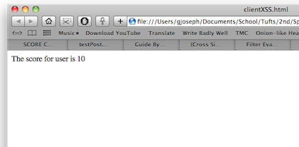
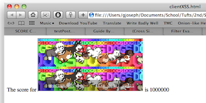
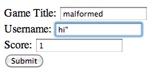
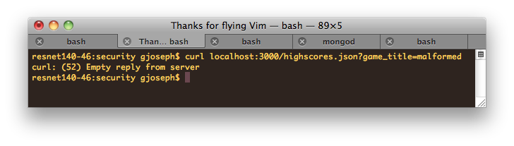
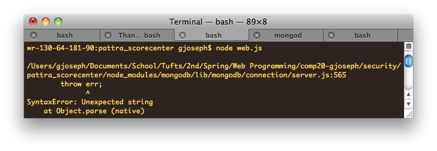

Prepared by Gabe Joseph • 4/30/2013
This assessment tests the security of the ScoreCenter web application developed by @pattra for Comp20 assignment 5. According to the specifications she followed from her client, ScoreCenter is "a web application that maintains high scores for HTML5 games" by providing an API for other developers to submit and retrieve the scores their games produce. It also offers a web interface where users can see all scores submitted, and search for scores by username. However, vulnerabilities in the application currently make it unsuitable for public use, so this document finds those vulnerabilities and suggests solutions for them.
What counts as a vulnerability? That's a tough question, because my client's client's (or client**; many levels of client-indirection here) specifications demanded inherent insecurities. Most importantly, authentication is neither required nor allowed in the submission API specification, so anyone can submit a high score for any game under any username, with any score amount (which makes the highness of a "high score" dubious). At the least, implementing an API key, so each game accepts submissions from only certain developers, would be necessary to ensure the data is valid. Therefore, this assessment focuses mainly on vulnerabilities in the code, not how the API can be (ab)used with false submissions, which is arguably the biggest insecurity of all.
Testing was first carried out "black-box", using just what would be available to an attacker. However, I ran all code locally, and therefore did have to modify it slightly to connect to a local mongo instance and not Heroku's. Using just simple tools (curl and an HTML form I'd previously written to test my own code), I found multiple vulnerabilities. I then reviewed the code to look for possible logic errors or opportunities for server-side exploitation.
Cross-Cross-Site Scripting
<script>) and ampersands (< won't produce <), an attacker can use ScoreCenter to attack a client's code. For example, running curl --data "game_title=frogger&username=<iframe src='http://omfgdogs.com'></iframe>&score=9999999999" localhost:3000/submit.json will not inject the amusing iframe into the ScoreCenter web interface, but might affect an unsuspecting client:
|  |  |
str.match(/[\d\w\s\]|[\~\!\@\#\$\^\*\-\_\+\;]*/g).join('');.Server crash on invalid JSON
, or " characters), which makes the JSON parser throw an uncaught exception. Though escaping input of such characters might eliminate the symptom, the real problem is the convoluted code for the /highscores.json route. Rather than letting Express handle the JSONifying of the JavaScript object that results from a MongoDB query, the function tries to make JSON manually by string concatenation. However, in the final line, that string is parsed back into an object by JSON.parse(), which is given to Express to send as the response. (Which, of course, is converted to a string again by Express via JSON.stringify().) Therefore, if the strings concatenated contain JSON characters ({, ", etc.), the parser will throw an exception, which ends the server:
|  |  |  |
Injection of additional database fields